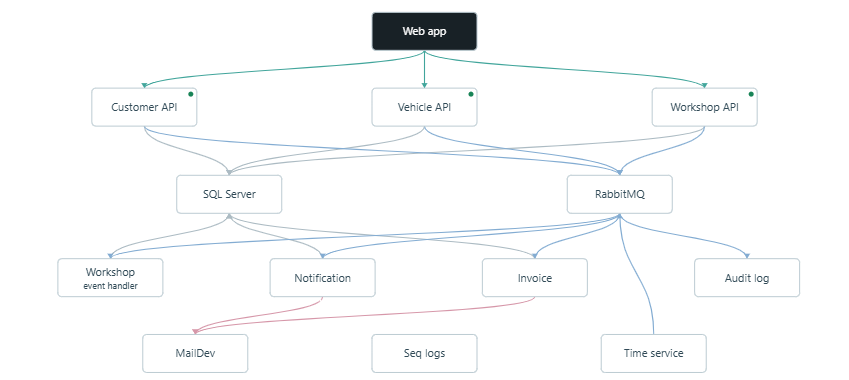

Team No. 28 | AI-driven chaos engineering in an isolated Docker sandbox

Web app → three HTTP APIs → SQL Server; domain events travel through RabbitMQ to Workshop projection, invoice, notification and audit workers. Time service emits daily events; mail and Seq support delivery and logs. Map is semi-automatically documented and manually reviewed.
| Component | Responsibility |
|---|---|
| AI planner / analyzer | Ranks every allowed experiment with reasons; interprets measured anomaly IDs and suggests fixes. Output is untrusted and validated. It cannot issue arbitrary shell commands. |
| Safety controller | Local Docker and checkout ownership checks; healthy preflight; one fault at a time; duration watchdog; unrelated-module latency / shared-blast-radius thresholds; STOP file; recovery gate. |
| Experiment tools | API, SQL or broker crash; 500 ms Workshop network delay. Combined profile: API crash with at most two read-load connections, 10 GETs/sec, 30 sec maximum. |
| Dashboard | Loopback-only Node server with request validation. Live health, lifecycle, ranked plans, charts, dependencies, findings, retained runs, confirmation and emergency STOP. |
Container restart restores services without deleting database volumes. Read probes detect HTTP-200 offline fallbacks but do not prove write correctness or message durability. AI findings are hypotheses for human review. The score is a disclosed experiment-specific heuristic, not an AI-certified SLA. No production or shared systems are targeted.